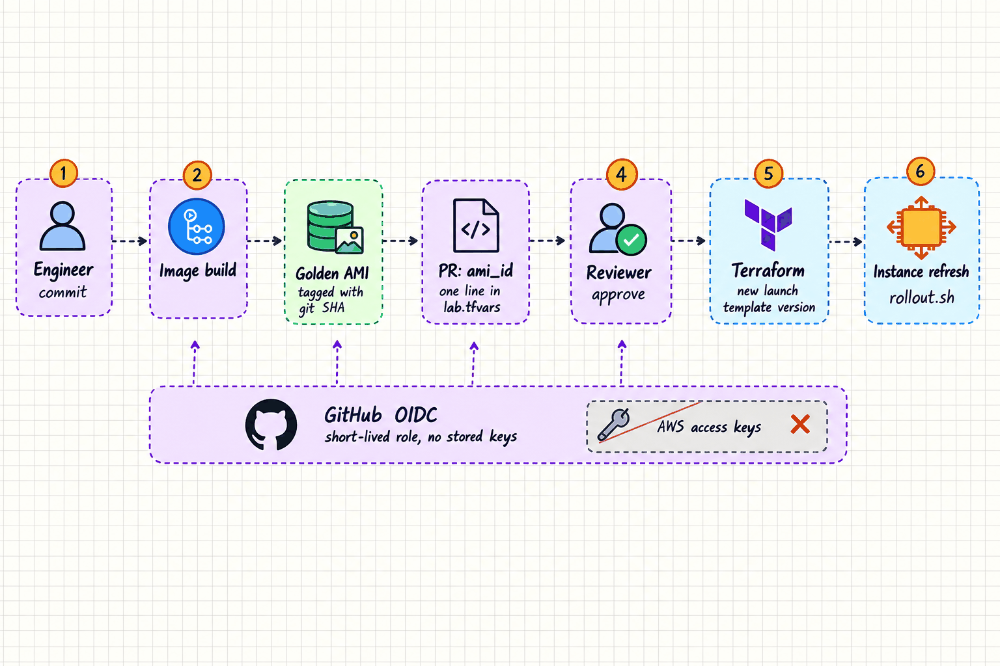
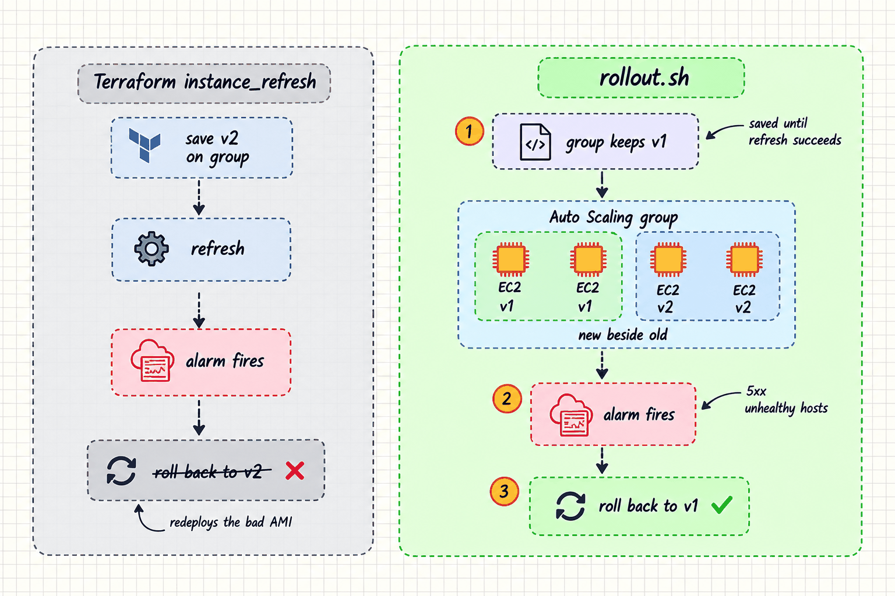

My AWS client work is an estate someone else built by hand. This lab starts from an empty account, around one rule: a server is never changed after it boots. A release is a new image, and the fleet gets replaced.
The situation
This is a personal lab, not client work. It has no users and no traffic, and nothing on this page is a production claim. I'm building it in public and writing it up as I go, so the table below is the real state of it today.
| Part | State |
|---|---|
| Terraform: bootstrap, VPC, ALB + ASG, RDS | Written, passes fmt, validate, tflint, trivy |
| CI: plan on PR, approved apply, rollout | Written, passes actionlint |
scripts/rollout.sh | Written, passes shellcheck |
| App, Packer + Ansible image build, k6 load test | Not started |
| Failure drills and runbooks | Not run |
Why not patch in place
The usual way to run a few EC2 instances is to SSH in and update them. After a few months no two servers are quite the same, and nobody can say exactly what's on them. Undoing a bad change means writing an undo by hand, under pressure.
Baking every change into an image fixes that. What was tested is exactly what runs, and rolling back means going back to the previous image. But it raises two new questions: how do you swap the whole fleet without dropping requests, and how do you undo a bad image without someone watching?
What I built
Each tier only accepts the one above it
The VPC has three subnet tiers across two Availability Zones. Only the ALB is reachable from the internet. The app security group accepts traffic from the ALB's security group and nothing else, and the database accepts port 5432 from the app's security group and nothing else. The rules reference security groups, not IP ranges, so they stay correct as instances come and go.
The fleet is an Auto Scaling group of 2 to 4 t4g.small instances in private subnets. It uses the ALB's health check, so an instance the load balancer considers broken gets replaced, not only one EC2 reports as dead. RDS is not publicly accessible and generates its own master password in Secrets Manager, so there's no password in Terraform state or in a tfvars file.
A release is one line in a tfvars file
The AMI ID lives in envs/lab/lab.tfvars, committed to Git. A build opens a pull request that changes that one line. CI runs checks and a terraform plan with a read-only role and posts the plan on the PR. After review and merge, a separate apply role, gated by a required reviewer in a GitHub Environment, applies it. Both roles are assumed over GitHub OIDC, so there are no AWS keys stored in GitHub.

The image build stage isn't built yet. Everything from the pull request onward is.
A committed AMI ID in tfvars
A data source that looks up the latest AMI
Why: A lookup would change the fleet on the next apply with no diff anyone reviewed. A committed ID makes every fleet change a pull request, and rollback is git revert. The cost is one extra PR per image build.
The rollback that redeploys the bad release
An Auto Scaling instance refresh can roll itself back. You give it CloudWatch alarms, and if one fires during the refresh, AWS stops and returns the fleet to the configuration that was saved on the group before the refresh started. Here the alarms are target 5xx errors and unhealthy hosts.
Terraform's instance_refresh block saves the new launch template version on the group first and then starts the refresh. So when the alarm fires, the "previous" configuration AWS rolls back to is already the new one, and the rollback puts the bad AMI back. It looks like it works until the day you need it.

So Terraform doesn't start rollouts. It creates the new launch template version and ignores the group's launch template setting. Then scripts/rollout.sh starts the refresh with the new version as the desired configuration. The group keeps the old version saved until the refresh succeeds, so a rollback has somewhere real to go.
# the group keeps the old version saved until this succeeds
DesiredConfiguration: { LaunchTemplate: {
LaunchTemplateId: $lt, Version: $version } },
Preferences: {
MinHealthyPercentage: 100,
MaxHealthyPercentage: 200,
InstanceWarmup: $warmup,
AutoRollback: true,
AlarmSpecification: { Alarms: $alarms }
}
Minimum healthy at 100% and maximum at 200% means new instances launch and pass their health check before old ones are removed, so capacity never drops below the desired count. The ALB's deregistration delay is set to cover the app's graceful shutdown, so requests in flight finish before an old instance goes away. If the refresh rolls back, the script fails the CI job, which is the signal to revert the AMI bump so Git matches the fleet again.
Start the refresh from a script, outside Terraform
Terraform's built-in instance_refresh block
Why: The built-in block saves the new version before the refresh, so its rollback lands on the bad AMI. The cost is that Terraform state no longer shows which version the fleet runs. The group itself and the CI log are the record.
A health check that can't take down the fleet
A shallow /healthz for the ALB, database checks in /readyz and alarms
A deep health check that also checks the database
Why: The group replaces instances the ALB marks unhealthy. If the health check depended on the database, one database blip would mark every instance unhealthy, and Auto Scaling would terminate a fleet that was fine. The cost: an instance that can't reach the database stays in service, and an alarm has to catch it.
No way in except through IAM
No security group opens port 22, the launch template has no key pair, and there's no bastion. Operators use SSM Session Manager, which is authenticated by IAM and logged. Instances require IMDSv2. The instance role can read exactly one secret, the database's, by ARN. Terraform state sits in a versioned, KMS-encrypted S3 bucket with S3's native locking, so there's no DynamoDB lock table.
The trade-off is that the shell depends on the SSM agent and an egress path. If the NAT instance is down, so is the shell.
What it costs
I sized it to cost about $2 a day while it's up, and nothing between sessions. envs/lab is destroyed at the end of each session. Only the bootstrap layer stays: the state bucket, the OIDC provider and the CI roles.
| Resource | Approx. per hour |
|---|---|
| ALB | ~$0.0225 + LCU |
| 2 × EC2 t4g.small | ~$0.034 |
| RDS db.t4g.micro | ~$0.016 |
| fck-nat on t4g.nano | ~$0.004 |
On-demand list prices used for planning, not a bill.
The biggest saving is egress. A managed NAT Gateway costs about $32 a month just to exist, and SSM interface endpoints would add about $7 a month each, per AZ. Packages are baked into the image, so the fleet barely needs the internet. One fck-nat instance and a free S3 gateway endpoint cover it. An AWS Budget alert exists before the first apply.
What's left
- The app and the image build. A small API with
/healthz,/readyzand/version, and a Packer + Ansible build that bakes it into an arm64 AMI over Session Manager, with no SSH even at build time. - Measured timings. Instance warmup and deregistration delay are placeholders. I'll measure boot and drain times and set them from data.
- Failure drills. The most important one is a release built to fail, to prove the alarm actually rolls the fleet back to the old image. Results go in a runbook per drill, published as measured, including when they fall short.
What production would add
This is a lab, and some gaps are on purpose to keep it cheap. Before real traffic I'd close them:
- Multi-AZ RDS. The database is single-AZ with one day of backups.
- Egress in every AZ. One NAT instance is a single point of failure. Production gets a NAT Gateway or VPC endpoints per AZ.
- AWS WAF on the ALB.
- Cross-region copies of AMIs and snapshots.